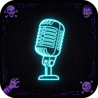

QUICMIC
Your phone is the peripheral.
Adds QuicMic to your home screen — opens fullscreen, no browser chrome.
On iPhone: Share → Add to Home Screen for the app experience.

Your phone is the peripheral.
Adds QuicMic to your home screen — opens fullscreen, no browser chrome.
On iPhone: Share → Add to Home Screen for the app experience.